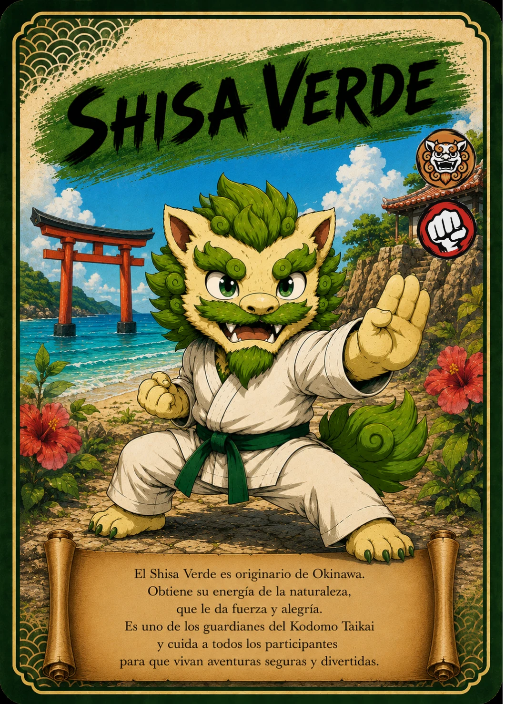

↗ Tocá la carta para verla en grande
EL ÁLBUM TAIKARDS · CARTA 37 / 48
SHISA VERDE
La calma de la naturaleza
- Naturaleza / elemento
- 🛡️ Guardián
- Tipo
- 🛡 Defensa
📖 Te cuento mi historia
Inspirado en los guardianes de Okinawa, el Shisa Verde del Kodomo Taikai encuentra su energía en la naturaleza. Su misión es acompañar y cuidar a los participantes. En esta clasificación representa la defensa: estar atento, sostener al equipo y actuar con calma. Junto al Shisa Amarillo demuestra que hay muchas maneras de ser valiente y que todas pueden ayudar al grupo.
Versión infantil basada en la carta de TAIKARDS. Sus personajes y aventuras pueden ser diferentes de las leyendas tradicionales. La naturaleza y el tipo corresponden a la clasificación del juego.
← Volver a todas las cartas